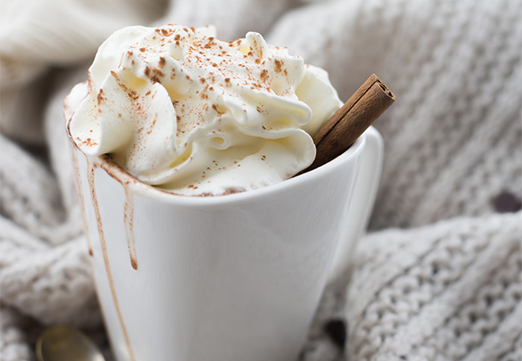

Andere dranken Sappen en fris Smoothies 4.4 Vers bereid met fruit en appelsap:> Aardbei-Banaan > Perzik-Passievrucht-Mango > Açai-Aardbei-Bosbes-Mango > Spinazie-Mango-Ananas-Banaan Appel-perensap 2.9 Jus d’orange 2.9 / 3.5 Vers geperste sinaasappelsap. Diverse frisdranken 2.9 Warme chocolademelk Huisgemaakt: pure chocolademelk 3.5 Van Belgische chocolade en opgeschuimde warme melk, met een intense cacaosmaak witte chocolademelk 3.5 Van Belgische witte chocolade en opgeschuimde warme melk, heerlijk zacht en romig.  Slagroom + 0.5 Huisgemaakte romige vanille slagroom.